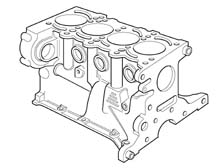
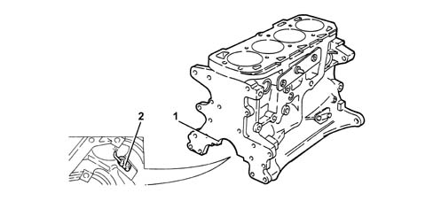
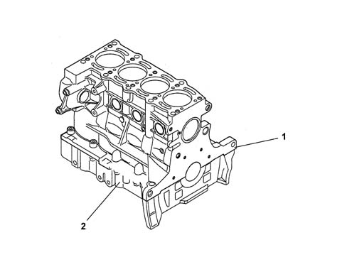

Introduction - ENGINE CRANKCASE
- Path
- Descriptions > 10 ENGINE > 1012 ENGINE CRANKCASE > Introduction - ENGINE CRANKCASE
- Kind
- system description
- Applies to
- all engines; all production periods
- Interactive page
- https://sloeber94.github.io/elrnDB-fPnd/en/#/2753452
Applies to: engines: 1.1, 1.2 8v; all production periods
The engine block is cast iron, with high mechanical strength.
The crankshaft is supported by means of five main bearings.
The cylinders are formed directly in the engine block, and are graded into three sizes plus one oversize.
There are special channels in the engine block walls which allow the flow of coolant and lubricating oil.

Applies to: engines: 1.3 JTD 16v; all production periods
The crankcase is in ductile cast iron.
The cylinders are formed directly in the engine block, and are graded into three sizes plus one oversize.
The crankshaft is supported by five main bearings (1).
There are special channels in the engine block walls which allow the flow of coolant and lubricating oil.
At the bottom of each cylinder, there is a jet (2) from which oil is sprayed onto the piston crown to cool it and ensure the lubrication of the gudgeon pin.

Applies to: engines: 1.3 JTD 16v; all production periods
LOWER CRANKCASE
The lower crankcase is made out of pressure cast aluminium alloy, with cast iron main bearing caps.
The mounts and main bearing caps are machined together with the upper crankcase.
The lower crankcase is fitted to the upper crankcase by means of bolts and locating dowels to ensure greater precision.
A strip of sealant is applied between both crankcases to prevent engine oil leaks.
The figure below shows the upper crankcase (1) and the lower crankcase (2).
